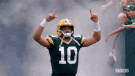
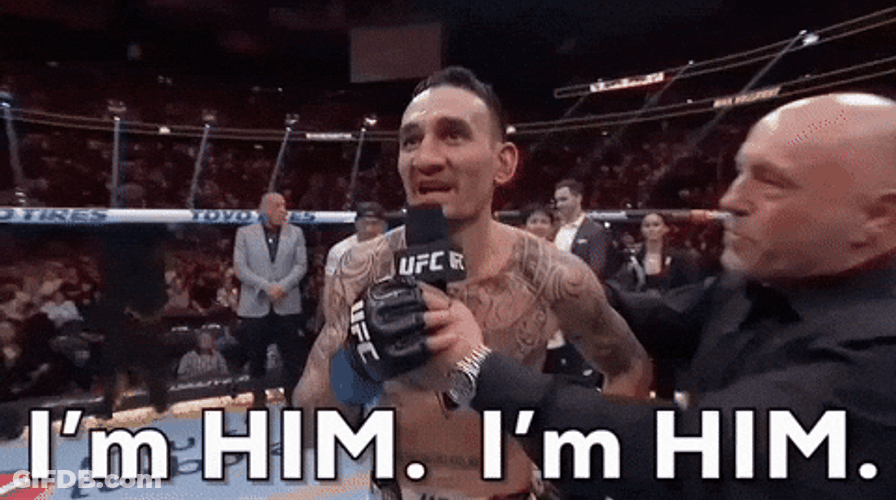
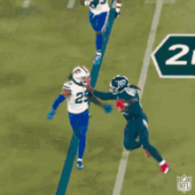
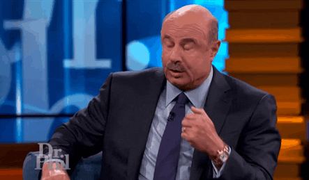

Weekly Debrief
Published every Tuesday because Monday you're all still crying
Week 5 Standings
Pulled from the league API: AFC and NFC divisions, in the order ESPN ranks them. Playoff odds aren't part of that feed, so they're off the board for now.
| Rk | AFC | Record | PF | PA | Streak | Moves |
|---|---|---|---|---|---|---|
| 1 | Nabers ate my Zombies | 4-1-0 | 1272.7 | 1111.2 | W3 | 8 |
| 2 | Covfefe is for Closers | 3-2-0 | 1302.6 | 1265.1 | W1 | 7 |
| 3 | MaHOMELANDER | 2-3-0 | 1377.7 | 1390.9 | L3 | 1 |
| 4 | Hurt Me Moore | 2-3-0 | 1310.6 | 1328.1 | L1 | 10 |
| 5 | Waddle On Deez Nuts | 2-3-0 | 1199.9 | 1239.9 | L1 | 2 |
| Rk | NFC | Record | PF | PA | Streak | Moves |
|---|---|---|---|---|---|---|
| 1 | Kenz VishusLicks | 3-2-0 | 1158.6 | 1266.9 | L1 | 6 |
| 2 | Hellen Keller's Dodgeball Squad | 3-2-0 | 1119.5 | 1010.9 | W2 | 13 |
| 3 | Catchy Football Name | 2-3-0 | 1149.3 | 1203.1 | W1 | 2 |
| 4 | Texas Determined Domination | 2-3-0 | 1100.3 | 1231.7 | L2 | 7 |
| 5 | Donuts All Day 24/7 | 2-3-0 | 1165.9 | 1109.3 | W1 | 2 |
JJ is the only team with four wins. Kenz, Covfefe, and Hellen Keller's Dodgeball Squad are 3-2, and the other six teams are all 2-3, so nobody is more than a game behind the 3-2 pack. MaHOMELANDER leads the league in points scored (1,377.7) and in points allowed (1,390.9), and has lost three straight. Hellen Keller's has made 13 waiver moves, the most in the league.
Week 5 Recap
Four of five games were decided by more than 40 points, and the biggest was 128.5. The fifth was won by a quarterback David picked up for $1 after JJ cut him.
Projected: 248.3 – 244.7
David won by 13.55 with a quarterback who scored 7.5. Tyler Shough was projected for 35.3, Jeremiyah Love scored 5.45 on a 21.39 projection, and Colston Loveland added 5.65, so the lineup David built around them was mostly decoration. What won it: Jordan Love, the Packers quarterback JJ cut on Thursday and David claimed for $1, scored 50.7 at OP (33.64 projected), and Christian Watson scored 40.8 on a 17.56 projection. That's 91.5 points from two Green Bay players on a team that spent the week shipping out Saquon Barkley's hamstring. Derrick Henry, the main thing David got back for it, scored 30.5, and Ja'Marr Chase scored 24.7 in his first game after the concussion. Waddle On Deez Nuts got 50.2 from Puka Nacua and 37.5 from the Broncos D/ST and then 3.85 from Alvin Kamara, 6.8 from the Jaylen Waddle the team is named after, and 23.55 from the Deshaun Watson Lucas paid $5 for (36.77 projected). Keenan Allen scored 13.25 on the bench. Swap him in for Kamara and Lucas still loses by 4.15. Lucas tried to do a diving catch with Deshaun Watson and was properly molested for his efforts. Bitch you thought...

Projected: 237.7 – 209.8
The biggest margin of the week by 49.45 points, 128.5, and a very simple explanation: Alby's team went off and Kenz's didn't. Alby beat his own projection by 76.27. Jacoby Brissett scored 51.05 at OP and outscored Josh Allen (47.75), Parker Washington scored 38.15 on a 17.69 projection, George Pickens scored 35.25 on 16.63, and the 49ers D/ST scored 34.0 (no stat correction this time, as far as we know). Alby also won the Rams-Bills game he was playing both sides of: Allen, James Cook (33.8), and Kyren Williams (28.1) combined for 109.65, while Kenz's Matthew Stafford (61.15) and Davante Adams (25.85) added up to 87.0. Stafford's 61.15 was Kenz's entire lineup. The other 124.3 points came from ten players, including RJ Harvey (2.2), Harold Fannin Jr. (2.4), and Tyler Allgeier (4.85). Kenz finished with the lowest score in the league and the three-game win streak is over. On Sunday morning, he spent $22 of FAAB on Marvin Harrison Jr., who scored 0.0 on his bench. Alby gets a victory lap over a trash squad - this was an epic beatdown. Ken should explore the trade market before his season is out of reach.
Projected: 249.7 – 214.4
McCarty's three-game losing streak ended with the highest individual score of the week: Drake Maye put up 69.65 at OP on a 37.59 projection. Kyler Murray added 38.85, Garrett Wilson scored 29.15 in the same flex spot that cost him 33.55 points last week, and Brock Bowers (listed questionable on Thursday) scored 29.0. Braelon Allen scored 29.1. The Oct. 1 trade pair, Javonte Williams (19.95) and DK Metcalf (7.55), scored 27.5, a point and a half more than Drake London's 26.05. Texas Determined Domination actually beat its projection by 9.94 and still lost by 74.05, which is a special kind of consolation prize. Joe Burrow scored 49.45 and Isaiah Likely scored 38.65 on a 16.43 projection, but CeeDee Lamb scored 4.15 on a 24.08 projection, Brian Robinson Jr. scored 3.6, and Jordan Addison, who was listed questionable and projected for nothing, scored 0.0 in a flex spot while Kyle Pitts Sr. (17.7) sat on the bench. Make that swap and Kolby still loses by 56.35. A live look at Drake Maye after not playing like absolute ass:

Projected: 252.0 – 254.9
Ryan has now won two in a row and the trade he made with David on Wednesday looks better by the day. Trevor Lawrence scored 46.15 at QB, Zay Flowers added 19.1, and Romeo Doubs scored 3.85, for 69.1 points from the three players he got. David's starters from the same deal (Henry and Devaughn Vele) scored 39.6. Saquon Barkley is on Ryan's IR spot and scored nothing. Jayden Daniels, the $3 waiver claim and the other half of that QB room, scored 48.55 at OP on a 39.64 projection in his first game back from the elbow. Joydip's 300.6 last week included a 20.0-point optimizer. This week's 215.0 didn't have one: Bijan Robinson, Amon-Ra St. Brown, Jalen Hurts, Quinshon Judkins, and Nico Collins all missed their projections, by a combined 36.11, and Deebo Samuel Sr. scored 3.75 in a flex spot (he's now listed out). The Packers D/ST scored 37.0 on his bench while the Patriots D/ST scored 20.5 in the lineup. Make that swap and the Kendre Miller-for-Deebo one and Joydip still loses by 17.5.
Projected: 241.0 – 257.8
JJ beat his projection by 85.55 and scored 326.55, the highest total in the league by 12.6. Three pickups that cost him $7 combined did 126.35 of it: Aaron Rodgers ($5) scored 43.95 at QB, C.J. Stroud ($1) scored 41.9 at OP, and the Jets D/ST ($1) scored 40.5 on an 18.57 projection. Jahmyr Gibbs scored 51.95, Malik Nabers (listed questionable on Thursday) scored 38.6 on a 17.23 projection, and Mike Evans scored 32.8 on 16.13. The Jordan Love he cut to make room for Rodgers scored 50.7 for David, and JJ won by 79.25 anyway. Kevin leads the league in points scored and in points allowed, which is the profile of a team that is good, unlucky, and occasionally just bad. This week was the third one: Jaylen Warren (51.55) and Bucky Irving (42.0) hit, but Jonathan Taylor scored 17.45 on a 28.33 projection, Ashton Jeanty scored 16.2 on 26.36, Tony Pollard scored 10.45, and Carnell Tate scored 2.85 on a 17.27 projection. That's three straight losses for the team with the most points in the league. Kevin picked a fight and got kicked in the fucking chest.
Week 6 Preview
Projections as of Thursday afternoon, per ESPN. The Bengals, Lions, Dolphins, and Vikings are on a bye, and several of you have noticed. Check your lineups before kickoff.
Projected: 241.53 – 246.37
The closest game of the week, 4.84 points, and Lucas is the favorite. Alby has the highest-projected player in the league in Josh Allen (46.41) and Jacoby Brissett (34.2) at OP, and a 313.95 week to live up to. His weak spot is the flex: Jacory Croskey-Merritt (11.07), Dalton Schultz (9.64), and Blake Corum (13.15) are starting while Ladd McConkey (13.03, questionable) sits on the bench. Lucas has Dak Prescott (36.65) at QB and Deshaun Watson (35.62) at OP, and Lamar Jackson, projected for 37.27 and listed questionable, is sitting in an IR slot where he can't score. Chris Olave, Alvin Kamara, and Denzel Boston are all questionable, 51.95 projected points between them. Alby beat his projection by 76.3 last week, so a 4.8-point gap isn't telling you much. Lean: Waddle On Deez Nuts, narrowly.

Projected: 228.5 – 218.23
Kenz is a 10.3-point favorite after his 185.45 disaster, and the lineup looks a lot healthier: Matthew Stafford (41.38) and Kirk Cousins (39.59) hold the QB and OP spots, Kenneth Walker III is back from his bye at 33.16, and Tetairoa McMillan is back at 20.14. Marvin Harrison Jr., the $22 pickup who scored 0.0 on the bench, is now listed with Houston and starting in a flex spot at 4.35. JJ's projection dropped 22.8 points from last week to 218.23 because Jahmyr Gibbs is on a bye, which puts Najee Harris (8.04) in his place at RB. DeVonta Smith, Mike Evans, and Stefon Diggs are all questionable, 52.75 projected points combined. The Rams-Cardinals game is a three-way proxy war: JJ owns Trey McBride and the Rams D/ST, Kenz owns Stafford and Davante Adams, and Alby owns Kyren Williams, Corum, Brissett, and Michael Wilson. JJ beat his projection by 85.55 last week, so the 10.3 isn't worth much. Lean: Kenz, if JJ's pickups cool off, either way this matchup is boring me.
Projected: 259.42 – 187.08
The widest gap of the week, 72.3 points. Kolby has the lowest projection in the league at 187.08, because four of his players are on a bye: Joe Burrow, Aaron Jones Sr., Jordan Addison, and Jaylen Wright. That leaves Sam Darnold (30.27) at QB and Dalton Kincaid, a tight end, at OP (10.17), and Rashee Rice (17.87) is questionable. Kevin has the highest projection (259.42) and is starting six running backs again, with Brock Purdy (42.48) at QB and Bucky Irving (22.79) at OP while Patrick Mahomes (37.49) sits on his bench, 14.7 projected points left there. The Chiefs D/ST (18.79) is on the bench behind the Bears D/ST (14.75). Kevin has lost three straight while leading the league in points scored, so no one is allowed to call this one over. Lean: MaHOMELANDER, by a lot... in fact this might be classified as felonious battery when it's all said and done.
Projected: 245.21 – 220.77
David is a 24.4-point favorite, built mostly on Jordan Love, the $1 claim JJ dropped, who is projected at 43.65 at OP (the second-highest projection in the league). Tyler Shough (36.66) and Derrick Henry (30.7) are next, Germie Bernard, the $17 pickup, is starting at WR at 13.4, and Ja'Marr Chase is on a bye. Ryan's lineup has Jayden Daniels (39.84) and Trevor Lawrence (35.53) in the QB spots, Zay Flowers at 20.94, and Romeo Doubs at 13.78. The trade is still lopsided on paper: Lawrence, Flowers, and Doubs are projected for 70.25, and Henry and Devaughn Vele for 44.77, a 25.5-point edge for Ryan's side. Saquon Barkley (22.35, questionable) is in Ryan's IR slot, and Chase Brown, Sam LaPorta, and Ollie Gordon II are all on a bye. Ryan has made 17 waiver moves, four more than the next team. Lean: Covfefe, by about what David gave away.

Projected: 236.65 – 197.39
Joydip is favored by 39.3, with five players on a bye: Amon-Ra St. Brown, Jared Goff, Malik Washington, Mike Gesicki, and Tyreek Hill, whom ESPN currently lists with no team and a 0.0 projection. He cut Jalen Hurts, who is listed out, and now has Bryce Young (38.15), the quarterback Kenz cut last week, at QB and wide receiver Jalen Coker (17.35) at OP. Deebo Samuel Sr. is out. McCarty's lineup has two zeros in it as of Thursday afternoon: Justin Jefferson and Kyler Murray are both on a bye, and Murray is sitting in his QB slot with Drake Maye (41.64) at OP. Tucker Kraft (15.19), Kyle Monangai (15.18, questionable), and Woody Marks (17.18) are on his bench. McCarty needs a quarterback. Lean: Hurt Me Moore, if Joydip's bye-week roster is set by Sunday.

League Business
- Standings update:JJ leads at 4-1 and is the only team with four wins. Kenz, Covfefe, and Hellen Keller's Dodgeball Squad are 3-2, and six teams are 2-3. Full AFC/NFC tables above.
- Waiver wire watch:Best $1 of the week: David's Jordan Love, who scored 50.7. Hellen Keller's paid $3 for Jayden Daniels and got 48.55, and JJ's Rodgers ($5), Stroud ($1), and Jets D/ST ($1) scored 126.35 together. Worst: Kenz paid $22 for Marvin Harrison Jr. (dropping Tre Tucker), and Harrison scored 0.0 on his bench. Lucas paid $5 for Deshaun Watson (dropping Hunter Henry), who scored 23.55 on a 36.77 projection, and Joydip picked up Mike Gesicki ($1) for Pat Freiermuth. Since Tuesday: Joydip cut Jalen Hurts, who scored 29.2 for him last week and is now listed out, along with Adonai Mitchell and David Montgomery, and added Tyreek Hill ($2), Kimani Vidal ($2), and Bryce Young ($3). Ryan, now at 17 moves, claimed Montgomery ($1), Pat Freiermuth ($2), the Ravens D/ST ($2), and Tre Tucker ($3, the player Kenz dropped for Harrison). David spent $17 on Germie Bernard, dropping Dohnte Meyers.
- Trade report:Early scorecard on Wednesday's David-Ryan trade: Ryan's three starters (Lawrence, Flowers, Doubs) scored 69.1 and David's two (Henry, Vele) scored 39.6, with Barkley on Ryan's IR. The Oct. 1 trade: Javonte Williams and DK Metcalf scored 27.5 for McCarty, and Drake London scored 26.05 for Ryan.
- Injury watch:Per ESPN's designations on Thursday: Deebo Samuel Sr., Jalen Hurts, and Zach Charbonnet are listed out, and Michael Pittman Jr. is on IR. Breece Hall, David Montgomery, Will Shipley, and Adonai Mitchell are listed doubtful. Saquon Barkley, Jeremiyah Love, Mike Evans, Brock Bowers, TreVeyon Henderson, Rashee Rice, Lamar Jackson, Caleb Williams, Chris Olave, Alvin Kamara, and Denzel Boston are listed questionable. Jayden Daniels is listed active.
- Optimizer watch:No new optimizers this week: every team's total matches its starters to the decimal. Three are still spent (David in Week 1, Kevin and Joydip in Week 4).
- Reminder:[lock times, dues, punishment tracker]